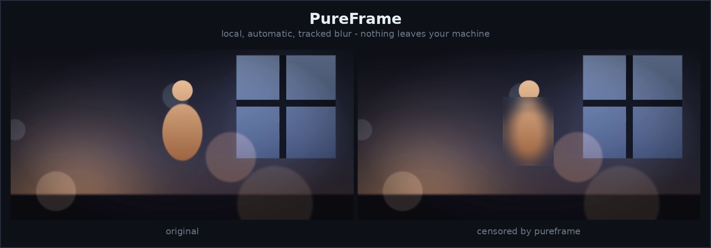
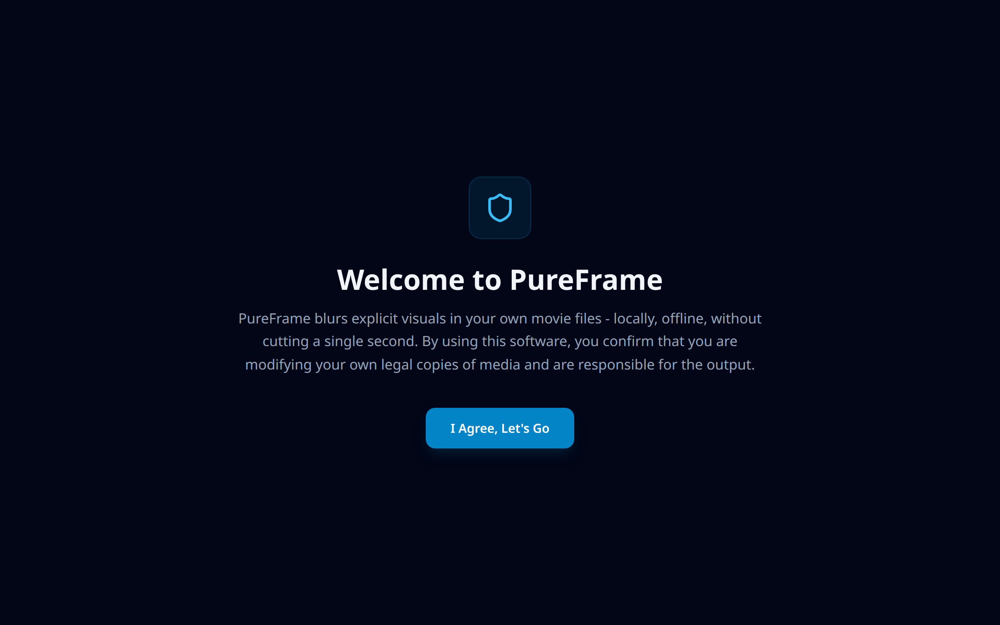
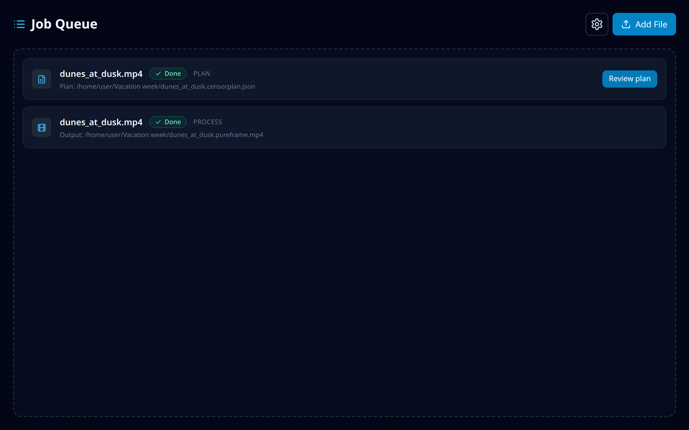
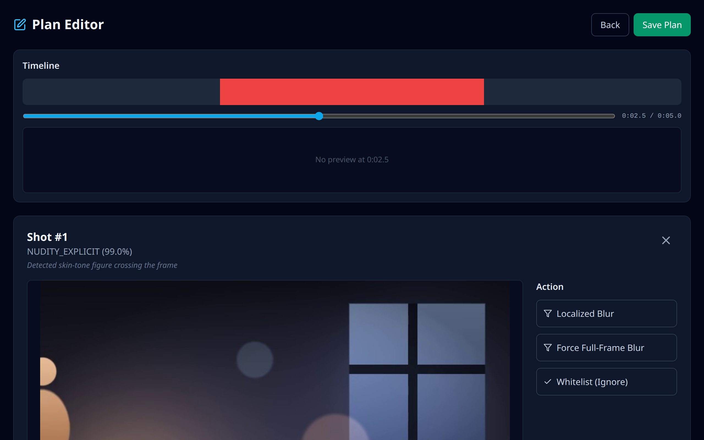
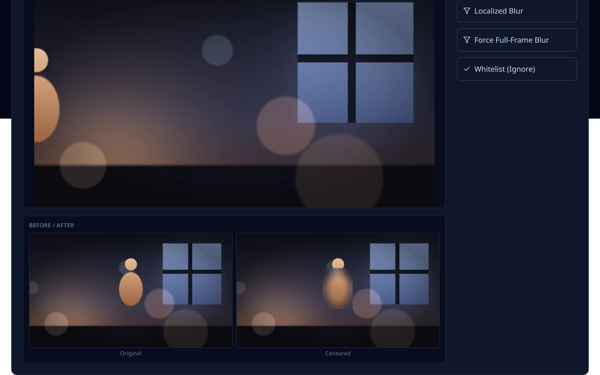
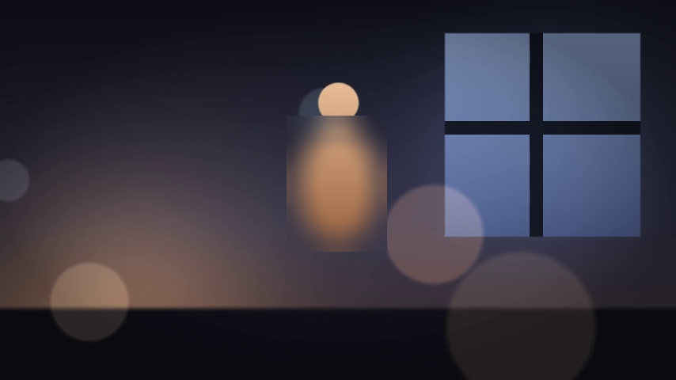

PureFrame watches a video the way a parent would, finds the shots that
need covering, and blurs exactly that region - tracked frame by frame.
No scene cutting, no audio changes, nothing uploaded. Below is a real
run, start to finish.

1. Drop a file in the desktop app

First run: pick a hardware profile, done in one screen.

The queue. One plan pass, one render pass, both finished.
2. Review exactly what gets covered

The plan editor. Red is a flagged shot on the timeline; selecting it
shows the frame, the category and confidence, and three honest
choices: keep the blur, blur everything, or whitelist the shot.

Original and censored, side by side, through the same overlay code the
final render uses. What you approve here is what ships in the video.
3. Get the video back

A frame from the rendered output. Only the flagged region changed -
cuts, motion and audio stay exactly as the creator made them.